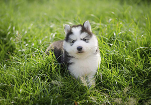

Siberian Husky
Even if you're not planning on dog-sledding across Alaska, the Siberian Husky's agreeable, outgoing temperament make him a great addition to your family.
- Personality: Friendly, gentle, dignified; alert, but not agressive
- Energy Level: Very Active; Siberians are highly energetic and enjoy regular exercise
- Good with Children: Better with Supervision
- Good with other Dogs: Yes
The breed won America's heart in the 1920's, when teams of Siberians rushed serum to diphtheria-stricken Nome. The breed's willingness to work and love of exercise is matched with a friendly and gentle nature. These are sociable, energetic dogs and your Siberian Husky puppy will love being a member of your pack, including kids and dogs.